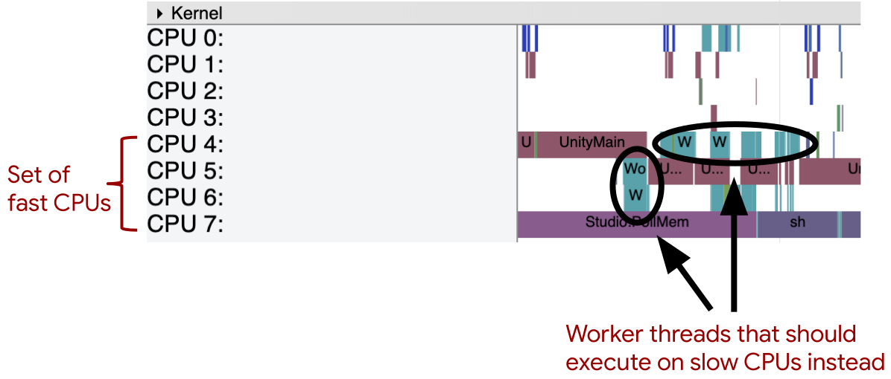

ОПТИМИЗАЦИЯ И ПОВЫШЕНИЕ ПРОИЗВОДИТЕЛЬНОСТИ ИГРОВЫХ ДВИЖКОВ ДЛЯ ANDROID
Боровиков А.И.*1, Зори С. А.*2
*1 магистр кафедры программной инженерии им. Л.П. Фельдмана, Донецкий национальный технический университет,
aleksey.borovikov.00@mail.ru, SPIN-код: 2472-1006
*2 д.т.н., проф. кафедры программной инженерии им. Л.П. Фельдмана, Донецкий национальный технический университет,
ik.ivt.rec@mail.ru, OrcID: 0000-0003-4018-234X, SPIN-код: 3565-6330
Аннотация
Зори С.А., Боровиков А.И. Оптимизация и повышение производительности игровых движков для android. В статье представлен анализ влияния производительности игры на «комфорт» для пользователей, проведён анализ возможных проблем оптимизации движка, тонкостей языка программирования java, которые могут повлиять на производительность и особенности написания игр под мобильные приложения. В дальнейших исследованиях планируется проверить на практике приведённые методы и представить метрики в виде графиков и диаграмм с целью их усовершенствования.
Ключевые слова: Java, CPU, GPU, fps, время простоя процессора, циклы, потоки, память, рендер, Vulkan, тепловая нагрузка, энергопотребление, OpenGL, libGDX, JVM GC.
Abstract: the article deals with the problems of optimization of mobile android-games based on the game engine «Unity» on the example of the Yakut company «Andi Games» (SP Sotieva Vs) Description of the optimization process from different angles.
Введение
Производительность является важным компонентом любой игры, от неё зависит популярность игры, комфорт пользователя и общее впечатление. Под производительностью обычно подразумевают средний уровень FPS в игре за определённый промежуток времени. FPS (Frame Per Second) - число кадров в секунду, кадры - это изображения, которые обрабатывает графический адаптер по команде центрального процессора. Чем больше кадров демонстрируется в секунду, тем плавнее и комфортнее игра [1].
Вопреки ожиданиям немногие игроки требуют высоких показателей фпс, для большинства достаточно средних показателей в 30 единиц, а для некоторых даже меньше. Исследования проделанные компанией Lesta Studio [2], показывают, что для всей совокупности пользователей связь между производительностью и комфортной игрой достаточно слабая (рис.1).

Рисунок 1 – Диаграмма зависимости между восприятием комфорта и средним FPS
Однако уровень комфорта зависит так же от жанра игры и от самого пользователя. Например, многие консольные игры работают на частоте 30fps, но с такими показателями картинка недостаточно плавная, а отзыв на манипуляции игрока запаздывает, что мешает полному погружению в игру. Для игроков в казуально -аркадные игры будет достаточно 40+fps, для шутеров от первого лица, стратегий, ритм-игр, MOBA понадобится около 60-100fps. Показатель Fps выше 100 потребуется игрокам соревновательных шутеров или киберспортсменов.
Таким образом, если не брать во внимание предпочтения в fps профессиональных игроков, то для большинства будет комфортным средний показатель в 60fps, этот показатель считается комфортным минимумом.
Влияние на производительность
На производительность игры влияет следующее:
1. Клиентское ПО, включая ОС. Если система загружена фоновыми процессами или запущены программы, обращающиеся к диску во время игры, то ресурсов для самой игры может оказаться недостаточно.
2. Конфигурация ПК. От комплектующих компьютера напрямую зависит производительность.
3. Настройки графики. Графику настраивают пользователи обычно сами или используют пресеты, однако ни тот ни другой вариант не являются гарантией того, что настройки будут выставлены максимально оптимально, из-за чего пользователь теряет производительность.
4. Сетевые проблемы. Клиент-серверное взаимодействие не всегда устойчиво, нередко у пользователей возникают проблемы с сетью, что влияет на производительность сетевых игр. Причиной этому могут послужить проблемы на стороне провайдера, большое количество беспроводных клиентов неоптимальный сетевой маршрут доставки трафика, некачественной сетевое оборудование.
5. Модификации. Модификации оригинальной игры сторонними разрабочиками отрицательно влияют на производительность. Они не только снижают средний fps, но и создают резкие провалы в тех случаях, где чистый клиент работает стабильно.
6. Скорость работы приложения. Существует огромное количество разных игровых движков со своими плюсами и минусами, все они потребляют разное количество ресурсов, в зависимости от качества архитектуры и поддерживаемых эффектов. Влияет так же и язык программирования, на котором написан движок, т.к. в разных языках ресурсы распределяются по разному. Об этом и пойдёт речь дальше.
Способы оптимизации кода
Для того, чтоб движок выдавал максимальное количество fps необходимо не только уметь с ним эффективно работать, но и знать тонкости разработки на языке, на котором написан движок, и принципы работы движка для лучшего понимания процесса распределения ресурсов [3].
Существует много разных факторов, влияющих на скорость обработки кадров, рассмотрим общие методы оптимизации кода. Которые могут подойти практически в любой ситуации:
1. Минимизация влияния объектов за пределами экрана. Минимизация объёма вычислений при помощи оптимизации отрисовки объектов чрезвычайно важна. Зачастую этим занимаются движки, или же графический процессор. Для реализации необходимо разделить объект на 2 слоя - первый будет графическим представлением объекта, а второй - данными и функциями. Таким образом, если объект находится за пределами экрана - нам больше не нужно его отрисовывать.
2. Независимость от обновления кадров. Обычно в игровых движках боьшинство объектов обновляются в каждом кадре, это сильно нагружает процессор и понижает производительность. Необходимо, по возможности, избавиться от обновлния в каждом кадре. Для этого необходимо отделить функцию рендеринга и вызывать её только при изменении состояния объекта.
3. 3.Непосредственные вычисления и поиск значений. Неплохую прибавку к производительности может дать хеширование тригонометрических функций, т.к. эффективнее хранить большую таблицу и брать данные из неё, а не выполнять расчёты на лету.
4. 4.Использование времени простоя процессора. Необходимо выделить функции, которые не зависят от времени, например погодные условия и вычислять их, когда пользователь отошёл, занят чтением или другими не затратными к ресурсами вещами. Время которое освобождается, когда пользователь занят вещами не нагружающими процессор, можно использовать для вычисления множества других событий.
Оптимизация движка на основе языка java
Так же не лишним будет упомянуть оптимизацию кода, опираясь на особенности языка программирования java и особенности работы с движками на его основе [4];
1. Циклы. Если вам необходимо обойти большой массив дааных, например список прямоугольников (для рендеринга), врагов или любых других тяжелых объектов и вы собираетесь для этого использовать цикл for, то лучше пользовться обратным for. Обратный for даёт большую эффективность за счёт того, что ему не нужно каждый раз проверять размер массива, а также это происходит, потому что сравнение с нулем является нормальным, в то время как сравнение с целым числом требует вычитания. Но если нет необходимоссти использовать цикл for, то более эффективным будет while.
2. Потоки. Необходимо разделять тяжелые действия на разне потоки и не запускть сложную логику в потоке отрисовки. При профилировании ЦП вы увидите поток с именем GLThread. Большинство движков используют GL 2.0/3.0 для рендеринга, и это поток, который содержит контекст GL. Это означает, что каждое изменение пользовательского интерфейса должно производиться через этот поток, иначе случаются плохие вещи — текстуры не загружаются, элементы пользовательского интерфейса меняются одновременно из разных мест, это может быть беспорядок. Проблема в том, что использование этого потока оставляет пользователя с зависшим приложением.
3. Память. Не стоит забывать очищать компоненты, которые уже не нужны. Java имеет свой сборщик мусора, который чистит ненужные классы, но некоторые движки, например libGDX, этого не делает. Это связано с тем, что память OpenGL не управляется JVM GC, и, таким образом, если вы создаете свои собственные текстуры, вам придется удалять их вручную, иначе вы рискуете трудно отлаживаемой утечкой памяти.
4. Пакеты. Вызов начала и конца пакета спрайтов и ShapeRenderer занимает много памяти. Итак, старайтесь изо всех сил вызывать начало и конец только один раз за кадр. Попробуйте визуализировать все свои спрайты, а затем визуализировать фигуры. Вместо того, чтобы рендерить ваши спрайты, затем формы, а затем повторно открывая ваш spritebatch.
5. Избегайте некоторых методов: Есть некоторые методы, которые требуют много ресурсов (или больше, чем другие), когда они используются, например пересечения класса Rectangle. Например, лучшее, что вы можете сделать для просмотра массива прямоугольников, — это сначала проверить, близки ли оба прямоугольника, и если да, то вызвать для них метод Intersects. Вместо вызова Intersects со всеми прямоугольниками в массиве.
6. Визуализация. Метод рисования — это еще один элемент, который требует большого количества ресурсов, если вам нужно изменить состояние элемента, даже если он находится за пределами экрана, вы можете каждый раз пытаться обновлять его логику/переменные, но вызывать метод рисования только если он находится внутри координат экрана.
7. Переменные. объявление переменных или объектов в плохих местах может вызвать зависание, избегайте объявления переменных в цикле рендеринга и, в основном, не объявляйте их внутри чего-то вроде цикла for, вместо этого объявляйте их вне цикла и обновляйте его значения внутри. Хороший момент в этом, заключается в том, что это не имеет значения, когда мы говорим о примитивных типах данных, поэтому, если переменная имеет тип int, boolean или float, ее объявление внутри цикла не окажет большого влияния на производительность.
8. Паттерны. Паттерны значительно упрощают разработку и эффективность приложение, а так же поддержку кода. Если вы хотите иметь один элемент, который может взаимодействовать и находиться в любом классе вашей программы, что-то вездесущее, например класс игрока, вы можете сделать его классом Singleton (это очень просто и даст вам более удобный код). Если вы не хотите, чтобы в вашей программе были бесполезные экземпляры, которые, возможно, вы никогда не будете использовать, вы можете использовать шаблон проектирования Factory.
Оптимизация игр для смартфонов [5]
1. 1.Скорость загрузки. Игроки хотят как можно быстрее погрузиться в действие вашей игры, поэтому важно максимально сократить время загрузки вашей игры . Следующие меры обычно помогают сократить время загрузки:
– Выполнить ленивую загрузку. Если вы используете одни и те же assets в последовательных сценах или уровнях игры, загружайте эти assets только один раз;
– Уменьшите размер своих assets. Таким образом, вы можете связать несжатые версии этих ресурсов с APK вашей игры;
– Используйте эффективный для диска метод сжатия. Примером такого метода является zlib.
2. Необходимо держать потоки с большим объемом памяти на одном процессоре. На многих мобильных устройствах кэши L1 находятся на определенных ЦП, а кэши L2 — на наборе ЦП, которые имеют общие часы. Чтобы максимизировать попадание в кэш L1, как правило, лучше всего, чтобы основной поток вашей игры, наряду с любыми другими потоками с большим объемом памяти, выполнялся на одном процессоре;
3. Необходимо откладывать кратковременную работу на процессоры с меньшей мощностью. Большинство игровых движков умеют откладывать операции рабочего потока на другой ЦП по сравнению с основным потоком вашей игры. Однако движок не знает о конкретной архитектуре устройства и не может предвидеть рабочую нагрузку вашей игры так же хорошо, как вы. Большинство устройств типа «система на кристалле» имеют как минимум 2 общих тактовых генератора. один для быстрых процессоров устройства и один для медленных процессоров устройства. Следствием этой архитектуры является то, что если одному быстрому ЦП необходимо работать на максимальной скорости, все остальные быстрые ЦП также работают на максимальной скорости. В примере отчета, показанном на рис. 2, показана игра, использующая преимущества быстрых процессоров [6]. Однако, этот высокий уровень активности быстро генерирует большое количество энергии и тепла.
Рисунок 2 – Демонстрация неоптимальное назначение потоков процессорам устройства
-
4. Тепловая нагрузка. Когда устройства перегреваются, они могут тормозить процессор и/или графический процессор, и это может неожиданным образом повлиять на игры. Игры, которые включают сложную графику, тяжелые вычисления или устойчивую сетевую активность, с большей вероятностью столкнутся с проблемами. Используйте тепловой API, чтобы отслеживать изменения температуры на устройстве и принимать меры для поддержания более низкого энергопотребления и более низкой температуры устройства. Когда устройство сообщает о перегреве, прекратите текущую деятельность, чтобы снизить энергопотребление. Например, уменьшите частоту кадров или тесселяцию полигонов.
Загрузка элементов пользовательского интерфейса. для поддержания постоянной частоты кадров важно учитывать относительно небольшой размер мобильных дисплеев и максимально упростить пользовательский интерфейс.
Отчет показанный на рисунке 3 [6], является примером фрейма пользовательского интерфейса, который пытается отобразить слишком много элементов по сравнению с возможностями мобильного устройства. Хорошая цель — сократить время обновления пользовательского интерфейса до 2-3 миллисекунд. Таких быстрых обновлений можно добиться, выполнив оптимизацию, подобную следующей:
– Обновлять только те элементы на экране, которые были перемещены;
– Ограничить количество текстур и слоев пользовательского интерфейса. Объединить графические вызовы, такие как шейдеры и текстуры, которые используют один и тот же материал;
– Перенести операции анимации элементов на GPU;
– Выполнить более агрессивное отсечение усеченной пирамиды и окклюзии;
– Если возможно, выполнить операции рисования с помощью Vulkan API;
– Накладные расходы на вызовы отрисовки ниже на Vulkan.

Рисунок 3 – Отчет для игры, в которой одновременно отображаются десятки элементов пользовательского интерфейса.
Выводы
Существует огромное количество игровых движков, которые предоставляют программисту много различных функций и позволяют создавать качественные игры, однако если она рассчитана и на пользователей со слабым устройством, то необходимо использовать знания языка программирования, архитектуры движка и операционной системы, чтоб добиться удовлетворительных показателей производительности программы. Для создания подобных проектов необходим большой опыт и немалое количество навыков.
В дальнейших исследованиях планируется проверить на практике приведённые выше методы и представить метрики в виде графиков и диаграмм с целью их усовершенствования.
Литература
- 1. Каким должен быть комфортный FPS в играх [Электронный ресурс] – Режим доступа: [Перейти]
- 2. Почему производительность в играх — это не просто средний FPS [Электронный ресурс] – Режим доступа: [Перейти]
- 3. Основы оптимизации кода игр [Электронный ресурс] – Режим доступа: [Перейти]
- 4. Optimizing your Game [Электронный ресурс] – Режим доступа: [Перейти]
- 5. The LibGDX performance guide [Электронный ресурс] – Режим доступа: [Перейти]
- 6. Best practices for Android game optimization [Электронный ресурс] – Режим доступа: [Перейти]